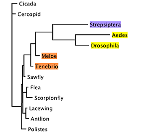
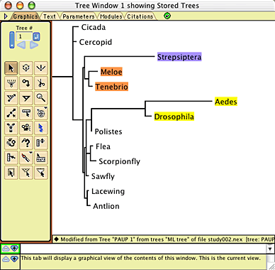
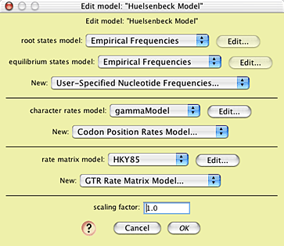
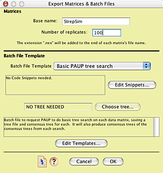
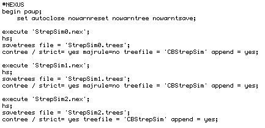
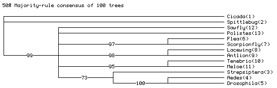

Are strepsipterans related to flies? Exploring long branch attraction
David R. MaddisonThe question
Strepsiptera, sometimes known as twisted-wing parasites, is an enigmatic group of insects. They are parasites of other insects. The males have only one pair of wings and odd raspberry-like eyes and lobed antennae. Females are wingless, and in most species never leave the host. These insects have traditionally been considered related to beetles, although that placement is supported by little evidence. Recently, molecular data have suggested that they may instead be related to true, two-winged flies (Diptera).For example, parsimony analysis of a small data matrix of 18S ribosomal DNA yields (Carmean and Crespi, 1995) a phylogeny in which Strepisptera is placed as sister group of Diptera (in yellow) rather than Coleoptera (in orange):

This is the strict consensus tree of 27 most-parsimonious trees.
However, examining the relative branch lengths for any one of the trees, it becomes evident that the branches for Diptera and Strepsiptera are unusually long:

This raised the possibility that the association between Strepsiptera and Diptera in these trees was an artifact, caused by long-branch attraction (Felsenstein, 1978; Hendy and Penny, 1989).
Huelsenbeck (1997) set to determine if the relationship seen in this analysis of Strepsiptera with Diptera could be accounted for by long-branch attraction. To do this, he conducted a simulation study. We won't reproduce his whole study here, just one part of his Figure 2.
We will ask only one simple question: If strepsipterans are indeed related to beetles, would our observation that parsimony analysis yields a phylogeny with strepsipterans related to Diptera be unexpected? If we can show that it is unexpected, we can reject the notion that strepsipterans are related to beetles. If, however, inference of strepsipterans as related to Diptera is expected even if they are actually related to beetles, then we cannot so readily reject the traditional view.
A simulation study
To conduct a simulation study, we first need a model tree. We can use a tree inferred using maximum likelihood, which places strepsipterans with beetles: |
| Model Tree |
The branch lengths of this tree were inferred using maximum likelihood. We also need a full model of DNA sequence evolution (which can also be inferred using maximum likelihood).
With this model in hand, we can simulated the evolution of 18S rDNA up the branches of this phylogeny, to yield a simulated matrix. We can then infer the phylogeny for this simulated matrix using parsimony, and see where Strepsiptera falls. Repeating this multiple times will give us an idea about the expected placement of Strepsiptera using parsimony inference presuming the model tree shown above.
Conducting the simulations
To conduct the simulations, in Mesquite open the example file "study002.nex", in the folder Mesquite_Folder/docs/mesquite/studies/study002/. This file contains the 13-taxa data matrix from Carmean and Crespi (1995) as modified by Huelsenbeck (1977), as well as the model tree shown above. The model tree will appear in a window when you open the file:
In addition, a model of character evolution has been entered into this file, with parameters obtained from maximum likelihood inference using PAUP*4 (Swofford, 2003). These were inferred on the model tree using the observed 18S rDNA data.
You can see the model by choosing Characters>Edit Character Model>Huelsenbeck Model:

This model uses the empirical state frequencies as present in the original 18S rDNA matrix, a model of character rate variation called "gammaModel", and a rate matrix model called "HKY85". You can see the nature of gammaModel by touching on the Edit button near its listing:

and the nature of the HKY85 model by touching on its Edit button:

With the model fully established, we can now conduct the simulation study. To do this, we want to ask Mesquite to create many simulated matrices, each evolved according to the model. We also want to create a script ("batch file") that will tell a tree-inference program (we will use PAUP*, but another program such as NONA could be used) to find the most parsimonious trees for each of the matrices, and summarize the results. Mesquite's Batch Architect package contains the tools to automate this process.
Choose Analysis>Batch Architect > Export Matrices & Batch Files... In the first dialog box that appears choose Simulated Matrices on Current Tree, then Evolve DNA Characters, then Huelsenbeck Model. You will be presented with the Export Matrices & Batch Files dialog box, in which you can enter the base name for the matrix files to be created and the number of matrices (100 is a good start).

The batch file template to be used is the one called "Basic PAUP tree search". This template builds a PAUP* command file that will tell PAUP to execute and analyze each matrix in turn, and then, and the end, harvest the results and calculate a majority-rule consensus tree.
After pressing OK, you will be asked for a location to save the 100 matrices. It is recommended that you have an empty folder available into which they can be saved to avoid cluttering up another folder with many files. You will be asked one last question: the number of characters to be evolved in each matrix. As we want the simulation model to be as similar as possible to reality, we will chose to evolve the same number of characters as is present in the observed matrix, which is 770.
Mesquite will now simulate the matrices, and produce a batch file called "paupCommands.nex". This file consists of commands for PAUP*. The start of the file looks something like this:

After some initial setup, PAUP* is to execute the first simulated matrix file ("StrepSim0.nex"), do a heuristic search (which, by default, should be for most-parsmonious trees), and then save the results to a tree file. It then saves the strict consensus tree of the most-parsimonious trees to a different tree file. It repeats this process for the next matrix, StrepSim1.nex, and the next one, StrepSim2.nex, and so on, until it gets to StrepSim99.nex, as requested near the end of the file:

After processing StrepSim99.nex, it reads in the tree file containing the accumulated consensus trees, and calculates both a strict consensus tree of the results from the 100 replicates, as well as the majority rule consensus tree of the replicate's results.
To ask PAUP* to do this analysis, open PAUP* and ask it to execute the file paupCommands.nex.
Interpreting the results
After PAUP* finished executing paupCommands.nex, near the bottom of PAUP*'s main window will be the majority rule consensus tree of the strict consensus trees from each of the 100 replicates. It will look something like this:
The actual numbers may differ, but they should be similar to those shown.
The "73" on the Strepsiptera + Aedes + Drosophila branch indicates that in 73 of the simulated matrices, the most parsimonious trees had Strepsiptera with Diptera, even though the model tree on which the data were simulated had Strepsiptera with beetles. This indicates that the inferred placement of strepsipterans with dipterans with the observed data might be the result of an inference artifact, as inferring strepsipterans with Diptera is expected even if they truly are with beetles.
Summary
Simulations were done to see what trees we would expect from a phylogeny inference under a particular model tree. The steps in the study are:
- The branch lengths of the model tree are inferred using maximum likelihood in PAUP*.
- Values of parameters of a model of sequence evolution (gamma shape parameter, transition/transversion rate) are inferred using maximum likelihood in PAUP* on the model tree using the observed DNA sequences.
- The data matrix is opened in Mesquite, along with the model tree. Submodels and a model of character evolution are created within Mesquite to match those inferred.
- Mesquite's Batch Architect is used to automate the process of simulating the evolution of multiple (100 or more) data matrices under this model, using Mesquite's Genesis package. Batch Architect also builds a command file for PAUP* and an instruction file for Mesquite so that it can interpret the results of the PAUP* analyses.
- The command file is executed in PAUP*, telling PAUP* to search for the shortest trees for each of the simulated matrices, accumulating the consensus trees for each matrix in a tree file. PAUP* is also instructed to calculate a majority-rule consensus tree of the results of each analysis.
- The majority-rule consensus tree is examined in PAUP* to see what trees are expected to be inferred under these conditions.
References
Carmean, D., and B. Crespi. 1995. Do long branches attract flies? Nature, 373:666.Felsenstein, J. 1978. Cases in which parsimony and compatibility methods will be positively misleading. Systematic Zoology, 27, 401-410.
Hendy, M.D., and Penny, D. 1989. A framework for the quantitative study of evolutionary trees. Systematic Zoology, 38, 297-309.
Huelsenbeck, J.P. 1997. Is the Felsenstein zone a fly trap? Systematic Biology, 46, 69-74.
Swofford, D. L. 2003. PAUP*. Phylogenetic Analysis Using Parsimony (*and Other Methods). Version 4 beta 10. Sinauer Associates, Sunderland, Massachusetts.